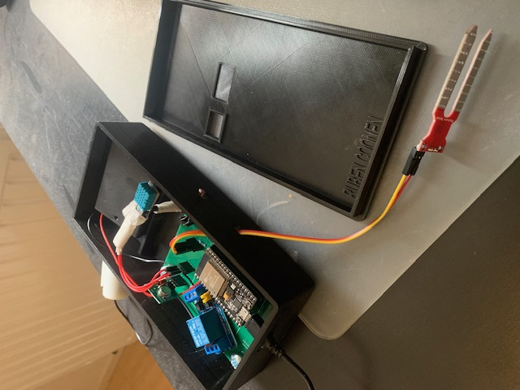
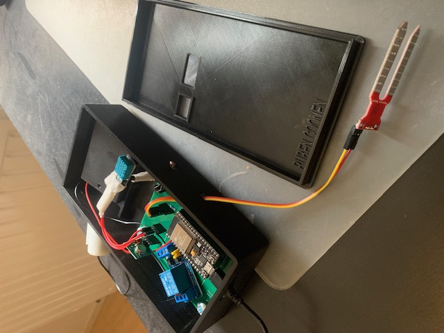

Ruben Coonen
Hallo, ik ben Ruben Coonen, een 20-jarige student uit Baarlo. Het afgelopen half jaar heb ik de kans gehad om de minor Smart Industry te volgen, en ik wil graag mijn ervaringen met jullie delen.
Toen ik voor het eerst hoorde over de minor Smart Industry, was ik meteen geïntrigeerd. Ik ben altijd al geïnteresseerd geweest in technologie en innovatie, en deze minor leek de perfecte kans om mijn kennis en vaardigheden op dat gebied verder te ontwikkelen. Ik heb me aangemeld en werd al snel toegelaten tot het programma.
De minor Smart Industry was intensief, maar ontzettend interessant. Gedurende de zes maanden durende periode heb ik verschillende vakken gevolgd die gericht waren op verschillende aspecten van Smart Industry. Een van de hoogtepunten van deze minor was het project bij Giesbers. De informatie die we hebben verkregen tijdens de workshops zijn in praktijk gebracht bij Giesbers. Naast de technische aspecten heb ik ook veel geleerd op het gebied van professionele ontwikkeling. We hadden regelmatig gastcolleges van professionals uit de industrie, en we kregen de kans om te netwerken met experts op het gebied van Smart Industry. Nu aan het einde van de minor kan ik terugkijken op een geslaagde en leerzame periode. In deze periode heb ik me veel ontwikkeld op profefsioneel en persoonlijk gebied. In de loop van mijn carrière kan ik zeker terug kjken op een geslaagde periode.

 
